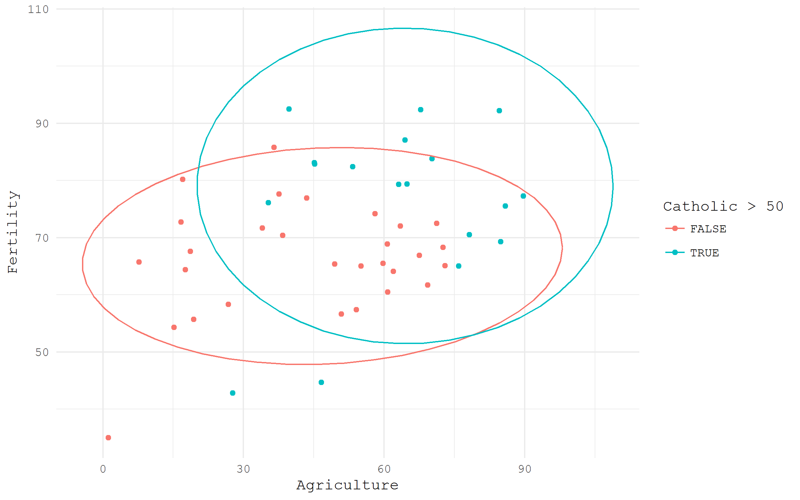
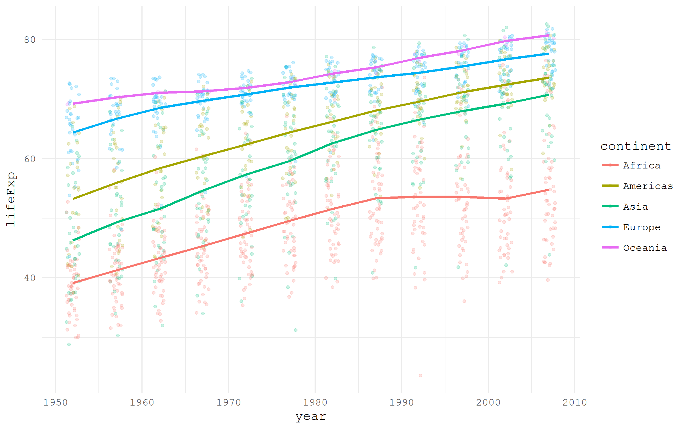
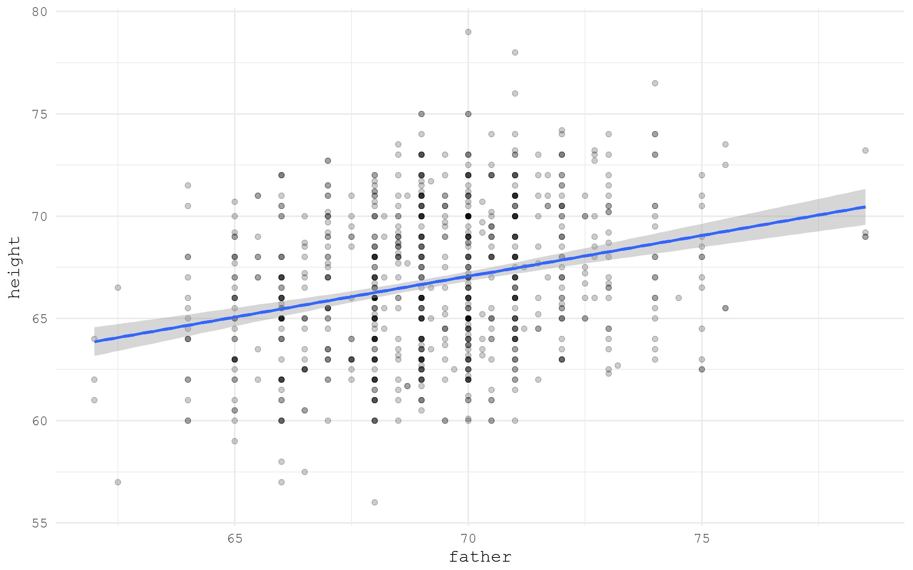
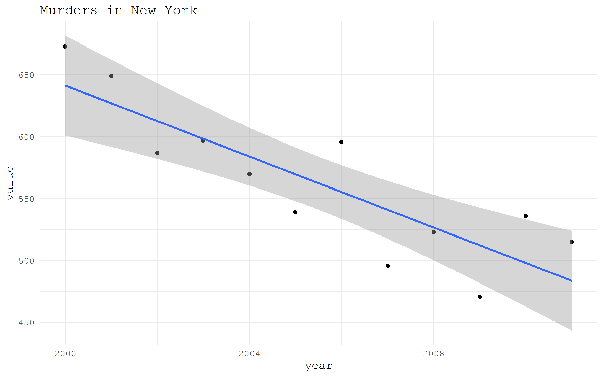

![]()
library(tidyverse)
swiss %>%
ggplot(aes(x = Agriculture, y = Fertility,
color = Catholic > 50))+
geom_point()+
stat_ellipse()+
theme_minimal(base_family = "mono")
The series consists of four posts:
-
Loading prepared datasets
-
Accessing popular statistical databases
-
Demographic data sources
- Getting spatial data
For each of the data acquisition options I provide a small visualization use case.
Built-in datasets
For illustration purposes, many R packages include data samples. Base R comes with a datasets package that offers a wide range of simple, sometimes very famous, datasets. Quite a detailed list of built-in datasets from various packages is maintained by Vincent Arel-Bundock.
The nice feature of the datasets form datasets package is that they are “always there”. The unique names of the datasets may be referred as the objects from Global Environment. Let’s have a look at a beautiful small dataset calls swiss - Swiss Fertility and Socioeconomic Indicators (1888) Data. I am going to check visually the difference in fertility based of rurality and domination of Catholic population.

Gapminder
Some packages are created specifically to disseminate datasets in a ready to use format. One of the nice examples is a package gapminder that contains a neat dataset widely used by Hans Rosling in his Gapminder project.
library(tidyverse)
library(gapminder)
gapminder %>%
ggplot(aes(x = year, y = lifeExp,
color = continent))+
geom_jitter(size = 1, alpha = .2, width = .75)+
stat_summary(geom = "path", fun.y = mean, size = 1)+
theme_minimal(base_family = "mono")
Grab a dataset by URL
If a dataset is hosted online and has a direct link to the file, it can be easily imported into the R session just specifying the URL. For illustration, I will access Galton dataset from HistData package using a direct link from Vincent Arel-Bundock’s list.
library(tidyverse)
galton <- read_csv("https://raw.githubusercontent.com/vincentarelbundock/Rdatasets/master/csv/HistData/Galton.csv")
galton %>%
ggplot(aes(x = father, y = height))+
geom_point(alpha = .2)+
stat_smooth(method = "lm")+
theme_minimal(base_family = "mono")
Download and unzip an archive
Quite often datasets are stored in archived from. With R it is very simple to download and unzip the desired data archives. As an example, I will download Historical New York City Crime Data provided by the Government of the Sate of New York and hosted at data.gov portal. The logic of the process is: first, we create a directory for the unzipped data; second, we download the archive; finally, unzip the archive and read the data.
library(tidyverse)
library(readxl)
# create a directory for the unzipped data
ifelse(!dir.exists("unzipped"), dir.create("unzipped"), "Directory already exists")
# specify the URL of the archive
url_zip <- "http://www.nyc.gov/html/nypd/downloads/zip/analysis_and_planning/citywide_historical_crime_data_archive.zip"
# storing the archive in a temporary file
f <- tempfile()
download.file(url_zip, destfile = f)
unzip(f, exdir = "unzipped/.")If the zipped file is rather big and we don’t want to download it again the next time we run the code, it might be useful to keep the archived data.
# if we want to keep the .zip file
path_unzip <- "unzipped/data_archive.zip"
ifelse(!file.exists(path_unzip),
download.file(url_zip, path_unzip, mode="wb"),
'file alredy exists')
unzip(path_unzip, exdir = "unzipped/.")Finally, let’s read and plot some of the downloaded data.
murder <- read_xls("unzipped/Web Data 2010-2011/Seven Major Felony Offenses 2000 - 2011.xls",
sheet = 1, range = "A5:M13") %>%
filter(OFFENSE %>% substr(1, 6) == "MURDER") %>%
gather("year", "value", 2:13) %>%
mutate(year = year %>% as.numeric())
murder %>%
ggplot(aes(year, value))+
geom_point()+
stat_smooth(method = "lm")+
theme_minimal(base_family = "mono")+
labs(title = "Murders in New York")